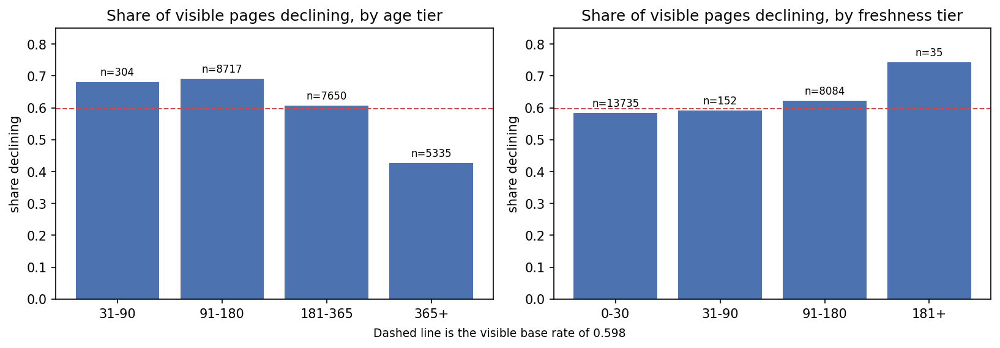
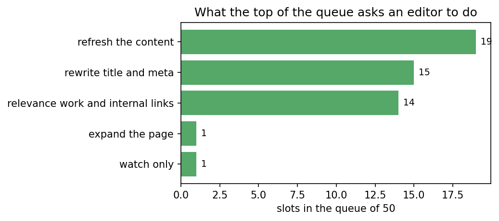

FlyRank ML Internship capstone · Refresh / Content Opportunity Scoring
Which already-visible pages should an editor refresh first?
Abstract
FlyRank runs content for many clients and cannot hand-review every page, so editors need a short list of what to fix first. I framed that as a ranking problem on the anonymized internship dataset (30,000 pages, 32 clients): rank visible pages by how likely they are to be declining, using only signals knowable before the outcome. A Logistic Regression over leakage-safe features beats a fair Week-4 rule baseline on client-grouped folds, reaching Precision@50 of 0.81 against a 0.60 base rate, and widening the training data to sub-threshold pages helps the top of the queue. The result is a ranked refresh queue with a reason code per page, not a claim about Google or about whether a refresh pays off. It is decision-support for prioritizing an editor's week.
1. The problem
A FlyRank editor owns hundreds of live pages and has time for maybe fifty reviews a month. The hard part is not writing the fix, it is choosing which pages deserve one. Guess wrong upward and you rewrite a page that was fine, burning hours and risking rankings it already had. Guess wrong downward and a page keeps slipping while nobody looks. That choice is the whole case study here: turn a pile of pages into an ordered queue an editor can trust, with a reason attached to each row.
One row is one content page. The output is a ranked queue with a reason code and a suggested action. The person acting is an editor working the top of the list. Ranking is worth automating because the signals that hint at decline are many and tangled, and no single hand rule orders them well. The final call still belongs to a person.
2. Data
The model, baseline, and validation run on the 30,000-row anonymized starter slice that ships in the repo: one row per page, 32 pseudonymized clients, metrics over a trailing 90-day window. Keeping the work on the committed slice means anyone can rerun it without gated access. My data contract verified the same lane on the full warehouse release, the March 2026 partition of roughly 9.8 million page-days, to confirm the grain and windows hold at scale.
What I left out matters more than what I kept. The label is derived from trend_direction, so that column, trend_pct, and the derived label never enter the features. The 90-day and last-30-day windows overlap the label's own window, so they are excluded as features too; only the earlier *_prev_30d window and static page properties are fair game. Pseudonymous IDs group and split the data, never train it. No client names, domains, URLs, or raw queries appear anywhere.
3. Methodology
The label is a proxy: a page counts as declining when trend_direction == "down". It is a defined stand-in for "worth a refresh slot", not a measured business outcome, and I treat it that way throughout.
The baseline is the transparent CTR-fix rule I built in Week 4, scored here as a decline ranker on the same folds, with a naive staleness ranker as a floor. The model is Logistic Regression over the leakage-safe features. An exhaustive search under work/experiments/ compared twelve model families; trees and boosters ranked worse at the top of the queue, and the only durable gain was widening the training population to include sub-threshold pages while still scoring only visible ones. Validation is client-grouped 5-fold, so no client sits in both train and test. Every number below is out-of-fold on unseen clients, with the base rate beside it.
4. Results
Same visible pages, same client-grouped folds, same metrics. The model beats both baselines, and widening the training data edges the top of the queue further. Base rate for declining pages is 0.598.
| Method | ROC-AUC | Precision@50 |
|---|---|---|
| Baseline: Week-4 CTR-fix rule | 0.568 | 0.600 |
| Baseline: staleness only | 0.482 | 0.664 |
| Logistic Regression (visible-train) | 0.607 | 0.740 |
| Logistic Regression (widened-train) | 0.637 | 0.808 |
The lift over the CTR-fix baseline is real but modest, about 1.35x on Precision@50, not the 3x a weak baseline would manufacture. That restraint is deliberate: the fair comparison is against the best transparent rule I could build, not a strawman.

5. Limitations and honest framing
Leakage is easy here and I refused it. Adding the label's own time window drives AUC toward a fake ceiling: honest features sit at 0.63, adding the 90-day window pushes it to 0.70, and adding the last-30-day window jumps it to 0.95, with the raw trend column reaching 0.997. The gap between 0.63 and 0.95 is the difference between an honest model and one that has read the answer.
A random split also flatters the model. The same pipeline scores 0.685 AUC when clients leak across the split versus 0.607 on held-out clients, and that 0.078 gap is memorization, not skill.
Most important, decision value is not proven. The model ranks declining pages above the base rate, but whether refreshing them recovers traffic is an intervention question that needs an A/B test this observational snapshot cannot run. The widening gain also carries a wide bootstrap interval across the sealed lockbox clients, so it is directional, not measured. Read this as decision-support for an editor's queue, nothing more, and never as a claim about Google's algorithm or the causal payoff of a refresh.
6. Ranked recommendations
The queue turns scores into moves an editor can make tomorrow. Each of the top fifty pages gets one action and one reason code. The mix leans on refreshing content and rewriting titles, with a smaller share for relevance and internal-link work.

The reason codes are honest about their own coverage. For nearly half of visible pages (48%) the rule finds no clear lever and says so, rather than inventing one; the rest split across low visibility (25%), stale-but-earning (12%), and low CTR for position (12%). Two archetypes dominate the queue: maturing assets that are slipping, and neglected earners that pull traffic but get no attention.
7. Reproducibility
Everything reruns from a fresh clone. The capstone notebook (work/notebooks/capstone.ipynb) regenerates every number and both charts on the committed data slice; the weekly notebooks (w01 through w07) hold each step, and the exhaustive model search lives under work/experiments/ with its ledger and sealed lockbox. Splits use fixed seeds. See the repository for the code and the environment.
8. Acknowledgments and data credit
Built on the FlyRank ML Internship dataset. Learn more at flyrank.ai. Crediting the data source is standard research practice, and it tells readers this is real production search data, used in anonymized form.